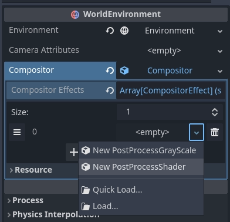
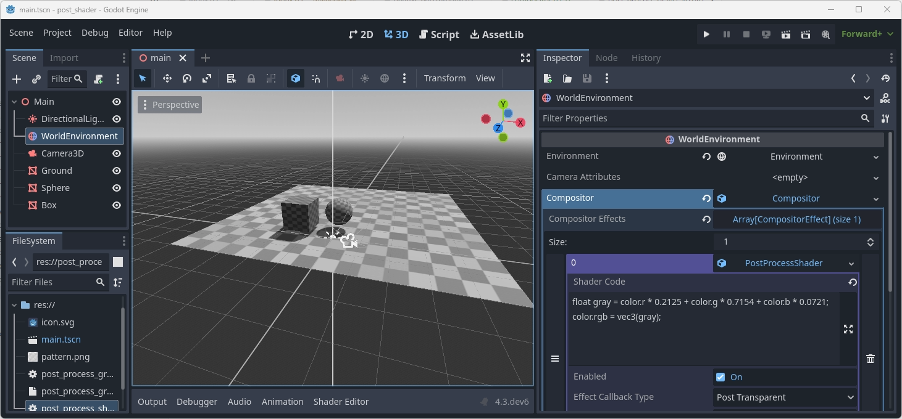

Compositor
Compositor là một tính năng mới trong Godot 4, cho phép kiểm soát pipeline kết xuất khi kết xuất nội dung của một Viewport.
Nó có thể được cấu hình trên node WorldEnvironment, khi đó nó áp dụng cho mọi Viewport, hoặc được cấu hình trên Camera3D và chỉ áp dụng cho Viewport dùng camera đó.
Resource Compositor được dùng để cấu hình compositor. Để bắt đầu, hãy tạo một compositor mới trên node phù hợp:

Ghi chú
Compositor hiện là tính năng chỉ được hỗ trợ bởi các renderer Mobile và Forward+.
Hiệu ứng compositor
Hiệu ứng compositor cho phép bạn chèn thêm logic vào pipeline kết xuất ở nhiều giai đoạn khác nhau. Đây là tính năng nâng cao, đòi hỏi hiểu biết sâu về pipeline kết xuất để tận dụng tối đa.
Vì logic cốt lõi của hiệu ứng compositor được gọi từ pipeline kết xuất, cần lưu ý rằng logic này sẽ chạy trên thread thực hiện việc kết xuất. Cần cẩn thận để tránh gặp các vấn đề về đa luồng.
Để minh họa cách dùng hiệu ứng compositor, chúng ta sẽ tạo một hiệu ứng hậu xử lý đơn giản cho phép bạn viết code shader của riêng mình và áp dụng nó lên toàn màn hình thông qua compute shader. Bạn có thể tìm dự án demo hoàn chỉnh tại đây.
Chúng ta bắt đầu bằng cách tạo một script mới tên post_process_shader.gd. Chúng ta sẽ biến nó thành tool script để có thể thấy hiệu ứng compositor hoạt động trong trình chỉnh sửa. Chúng ta cần kế thừa từ CompositorEffect. Chúng ta cũng phải đặt tên lớp cho script.
@tool
extends CompositorEffect
class_name PostProcessShader
[GlobalClass, Tool]
public partial class PostProcessShader : CompositorEffect
Tiếp theo, chúng ta sẽ định nghĩa một hằng số cho code mẫu của shader. Đây là code khung giúp compute shader của chúng ta hoạt động.
const template_shader: String = """
#version 450
// Invocations in the (x, y, z) dimension
layout(local_size_x = 8, local_size_y = 8, local_size_z = 1) in;
layout(rgba16f, set = 0, binding = 0) uniform image2D color_image;
// Our push constant
layout(push_constant, std430) uniform Params {
vec2 raster_size;
vec2 reserved;
} params;
// The code we want to execute in each invocation
void main() {
ivec2 uv = ivec2(gl_GlobalInvocationID.xy);
ivec2 size = ivec2(params.raster_size);
if (uv.x >= size.x || uv.y >= size.y) {
return;
}
vec4 color = imageLoad(color_image, uv);
#COMPUTE_CODE
imageStore(color_image, uv, color);
}
"""
private const string _templateShader = @"
#version 450
// Invocations in the (x, y, z) dimension
layout(local_size_x = 8, local_size_y = 8, local_size_z = 1) in;
layout(rgba16f, set = 0, binding = 0) uniform image2D color_image;
// Our push constant
layout(push_constant, std430) uniform Params {
vec2 raster_size;
vec2 reserved;
} params;
// The code we want to execute in each invocation
void main() {
ivec2 uv = ivec2(gl_GlobalInvocationID.xy);
ivec2 size = ivec2(params.raster_size);
if (uv.x >= size.x || uv.y >= size.y) {
return;
}
vec4 color = imageLoad(color_image, uv);
#COMPUTE_CODE
imageStore(color_image, uv, color);
}
";
Để biết thêm về cách compute shader hoạt động, vui lòng xem Sử dụng compute shader.
Điểm quan trọng ở đây là với mỗi pixel trên màn hình, hàm main của chúng ta được thực thi, và bên trong đó chúng ta nạp giá trị màu hiện tại của pixel, thực thi code của người dùng, rồi ghi màu đã sửa đổi trở lại ảnh màu.
#COMPUTE_CODE sẽ được thay thế bằng code của người dùng.
Để đặt code của người dùng, chúng ta cần một biến export. Chúng ta cũng sẽ định nghĩa một vài biến script sẽ dùng đến:
@export_multiline var shader_code: String = "":
set(value):
mutex.lock()
shader_code = value
shader_is_dirty = true
mutex.unlock()
var rd: RenderingDevice
var shader: RID
var pipeline: RID
var mutex: Mutex = Mutex.new()
var shader_is_dirty: bool = true
private string _shaderCode = "";
[Export(PropertyHint.MultilineText)]
public string ShaderCode
{
get { return _shaderCode; }
set
{
_mutex.Lock();
_shaderCode = value;
shaderIsDirty = true;
_mutex.Unlock();
}
}
private RenderingDevice _rd;
private Rid _shader;
private Rid _pipeline;
private Godot.Mutex _mutex = new Godot.Mutex();
private bool _shaderIsDirty = true;
Lưu ý việc dùng Mutex trong code. Phần lớn phần cài đặt của chúng ta được gọi từ engine kết xuất và do đó chạy trên thread kết xuất.
Chúng ta cần đảm bảo rằng khi đặt code shader mới và đánh dấu code shader là "dirty", thread kết xuất không đồng thời truy cập dữ liệu này.
Tiếp theo, chúng ta khởi tạo hiệu ứng.
# Called when this resource is constructed.
func _init():
effect_callback_type = EFFECT_CALLBACK_TYPE_POST_TRANSPARENT
rd = RenderingServer.get_rendering_device()
// Called when this resource is constructed.
public PostProcessShader()
{
EffectCallbackType = EffectCallbackTypeEnum.PostTransparent;
_rd = RenderingServer.GetRenderingDevice();
}
Điều chính ở đây là đặt effect_callback_type, cho engine kết xuất biết cần gọi code của chúng ta ở giai đoạn nào của pipeline kết xuất.
Ghi chú
Hiện tại chúng ta chỉ truy cập được các giai đoạn của pipeline kết xuất 3D!
Chúng ta cũng lấy tham chiếu đến rendering device, thứ sẽ rất hữu ích.
Chúng ta cũng cần tự dọn dẹp; để làm vậy, chúng ta phản hồi thông báo NOTIFICATION_PREDELETE:
# System notifications, we want to react on the notification that
# alerts us we are about to be destroyed.
func _notification(what):
if what == NOTIFICATION_PREDELETE:
if shader.is_valid():
# Freeing our shader will also free any dependents such as the pipeline!
rd.free_rid(shader)
// System notifications, we want to react on the notification that
// alerts us we are about to be destroyed.
public override void _Notification(int what)
{
if (what == NotificationPredelete)
{
if (_shader.IsValid)
{
// Freeing our shader will also free any dependents such as the pipeline!
_rd.FreeRid(_shader);
}
}
}
Lưu ý rằng chúng ta không dùng mutex ở đây dù chúng ta tạo shader bên trong thread kết xuất. Các phương thức của rendering server là thread safe và free_rid sẽ hoãn việc dọn dẹp shader cho đến khi mọi frame đang được kết xuất hoàn tất.
Cũng lưu ý rằng chúng ta không giải phóng pipeline. Rendering device có theo dõi phụ thuộc, và vì pipeline phụ thuộc vào shader nên nó sẽ được tự động giải phóng khi shader bị hủy.
Từ thời điểm này trở đi, code của chúng ta sẽ chạy trên thread kết xuất.
Bước tiếp theo là một hàm trợ giúp sẽ biên dịch lại shader nếu code của người dùng thay đổi.
# Check if our shader has changed and needs to be recompiled.
func _check_shader() -> bool:
if not rd:
return false
var new_shader_code: String = ""
# Check if our shader is dirty.
mutex.lock()
if shader_is_dirty:
new_shader_code = shader_code
shader_is_dirty = false
mutex.unlock()
# We don't have a (new) shader?
if new_shader_code.is_empty():
return pipeline.is_valid()
# Apply template.
new_shader_code = _templateShader.replace("#COMPUTE_CODE", new_shader_code);
# Out with the old.
if shader.is_valid():
rd.free_rid(shader)
shader = RID()
pipeline = RID()
# In with the new.
var shader_source: RDShaderSource = RDShaderSource.new()
shader_source.language = RenderingDevice.SHADER_LANGUAGE_GLSL
shader_source.source_compute = new_shader_code
var shader_spirv: RDShaderSPIRV = rd.shader_compile_spirv_from_source(shader_source)
if shader_spirv.compile_error_compute != "":
push_error(shader_spirv.compile_error_compute)
push_error("In: " + new_shader_code)
return false
shader = rd.shader_create_from_spirv(shader_spirv)
if not shader.is_valid():
return false
pipeline = rd.compute_pipeline_create(shader)
return pipeline.is_valid()
// Check if our shader has changed and needs to be recompiled.
public bool CheckShader()
{
if (_rd is null)
{
return false;
}
var newShaderCode = "";
// Check if our shader is dirty.
_mutex.Lock();
if (_shaderIsDirty)
{
newShaderCode = _shaderCode;
_shaderIsDirty = false;
}
_mutex.Unlock();
// We don't have a (new) shader?
if (newShaderCode == "")
{
return _pipeline.IsValid;
}
// Apply template.
newShaderCode = _templateShader.Replace("#COMPUTE_CODE", newShaderCode);
// Out with the old.
if (_shader.IsValid)
{
_rd.FreeRid(_shader);
_shader = new Rid();
_pipeline = new Rid();
}
// In with the new.
RDShaderSource shaderSource = new RDShaderSource();
shaderSource.Language = RenderingDevice.ShaderLanguage.Glsl;
shaderSource.SourceCompute = newShaderCode;
RDShaderSpirV shaderSpirV = _rd.ShaderCompileSpirVFromSource(shaderSource);
if (shaderSpirV.CompileErrorCompute != "")
{
GD.PushError(shaderSpirV.CompileErrorCompute);
GD.PushError("In: " + newShaderCode);
return false;
}
_shader = _rd.ShaderCreateFromSpirV(shaderSpirV);
if (!_shader.IsValid)
{
return false;
}
_pipeline = _rd.ComputePipelineCreate(_shader);
return _pipeline.IsValid;
}
Ở đầu phương thức này, chúng ta lại dùng mutex để bảo vệ việc truy cập code shader của người dùng và cờ "is dirty". Chúng ta tạo một bản sao cục bộ của code shader người dùng nếu nó đang "dirty".
Nếu không có đoạn code mới, chúng ta trả về true nếu đã có một pipeline hợp lệ.
Nếu có đoạn code mới, chúng ta nhúng nó vào code mẫu rồi biên dịch.
Cảnh báo
Code ở đây biên dịch code mới lúc chạy. Điều này rất tốt cho việc làm prototype vì chúng ta có thể thấy ngay tác dụng của shader đã thay đổi.
Cách này ngăn việc biên dịch trước và cache shader, điều có thể gây vấn đề trên một số nền tảng như console. Lưu ý rằng dự án demo có kèm một ví dụ thay thế, trong đó một file glsl chứa toàn bộ compute shader và file này được sử dụng. Với cách này, Godot có thể biên dịch trước và cache shader.
Cuối cùng, chúng ta cần cài đặt callback của hiệu ứng; engine kết xuất sẽ gọi nó ở đúng giai đoạn kết xuất.
# Called by the rendering thread every frame.
func _render_callback(p_effect_callback_type, p_render_data):
if rd and p_effect_callback_type == EFFECT_CALLBACK_TYPE_POST_TRANSPARENT and _check_shader():
# Get our render scene buffers object, this gives us access to our render buffers.
# Note that implementation differs per renderer hence the need for the cast.
var render_scene_buffers: RenderSceneBuffersRD = p_render_data.get_render_scene_buffers()
if render_scene_buffers:
# Get our render size, this is the 3D render resolution!
var size = render_scene_buffers.get_internal_size()
if size.x == 0 and size.y == 0:
return
# We can use a compute shader here.
var x_groups = (size.x - 1) / 8 + 1
var y_groups = (size.y - 1) / 8 + 1
var z_groups = 1
# Push constant.
var push_constant: PackedFloat32Array = PackedFloat32Array()
push_constant.push_back(size.x)
push_constant.push_back(size.y)
push_constant.push_back(0.0)
push_constant.push_back(0.0)
# Loop through views just in case we're doing stereo rendering. No extra cost if this is mono.
var view_count = render_scene_buffers.get_view_count()
for view in range(view_count):
# Get the RID for our color image, we will be reading from and writing to it.
var input_image = render_scene_buffers.get_color_layer(view)
# Create a uniform set.
# This will be cached; the cache will be cleared if our viewport's configuration is changed.
var uniform: RDUniform = RDUniform.new()
uniform.uniform_type = RenderingDevice.UNIFORM_TYPE_IMAGE
uniform.binding = 0
uniform.add_id(input_image)
var uniform_set = UniformSetCacheRD.get_cache(shader, 0, [ uniform ])
# Run our compute shader.
var compute_list:= rd.compute_list_begin()
rd.compute_list_bind_compute_pipeline(compute_list, pipeline)
rd.compute_list_bind_uniform_set(compute_list, uniform_set, 0)
rd.compute_list_set_push_constant(compute_list, push_constant.to_byte_array(), push_constant.size() * 4)
rd.compute_list_dispatch(compute_list, x_groups, y_groups, z_groups)
rd.compute_list_end()
// Called by the rendering thread every frame.
public override void _RenderCallback(int effectCallbackType, RenderData renderData)
{
if (_rd is not null && effectCallbackType == (int)EffectCallbackTypeEnum.PostTransparent && CheckShader())
{
// Get our render scene buffers object, this gives us access to our render buffers.
// Note that implementation differs per renderer hence the need for the cast.
RenderSceneBuffersRD renderSceneBuffers = renderData.GetRenderSceneBuffers() as RenderSceneBuffersRD;
if (renderSceneBuffers is not null)
{
// Get our render size, this is the 3D resolution!
var size = renderSceneBuffers.GetInternalSize();
if (size.X == 0 && size.Y == 0)
{
return;
}
// We can use a compute shader here.
uint xGroups = (uint)((size.X - 1) / 8 + 1);
uint yGroups = (uint)((size.Y - 1) / 8 + 1);
uint zGroups = 1;
// Push Constant.
float[] tempPushConstant = [size.X, size.Y, 0, 0];
byte[] pushConstant = new byte[tempPushConstant.Length * sizeof(float)];
Buffer.BlockCopy(tempPushConstant, 0, pushConstant, 0, pushConstant.Length);
// Loop through views just in case we're doing stereo rendering. No extra cost if this is mono.
var viewCount = renderSceneBuffers.GetViewCount();
for (uint view = 0; view < viewCount; view++)
{
// Get the RID for our color image, we will be reading from and writing to it.
var inputImage = renderSceneBuffers.GetColorLayer(view);
// Create a uniform set.
// This will be cached; the cache will be cleared if our viewport's configuration is changed.
RDUniform uniform = new RDUniform()
{
UniformType = RenderingDevice.UniformType.Image,
Binding = 0,
};
uniform.AddId(inputImage);
var uniformSet = UniformSetCacheRD.GetCache(_shader, 0, [uniform]);
// Run our compute shader.
var computeList = _rd.ComputeListBegin();
_rd.ComputeListBindComputePipeline(computeList, _pipeline);
_rd.ComputeListBindUniformSet(computeList, uniformSet, 0);
_rd.ComputeListSetPushConstant(computeList, pushConstant, (uint)pushConstant.Length);
_rd.ComputeListDispatch(computeList, xGroups, yGroups, zGroups);
_rd.ComputeListEnd();
}
}
}
Ở đầu phương thức này, chúng ta kiểm tra xem có rendering device không, kiểu callback có đúng không, và kiểm tra xem đã có shader chưa.
Ghi chú
Việc kiểm tra kiểu hiệu ứng chỉ là cơ chế an toàn. Chúng ta đã đặt nó trong hàm _init, tuy nhiên người dùng vẫn có thể thay đổi nó trong UI.
Tham số p_render_data cho chúng ta truy cập một đối tượng chứa dữ liệu riêng cho frame đang được kết xuất. Hiện tại chúng ta chỉ quan tâm đến render scene buffers, cho phép truy cập mọi buffer nội bộ mà engine kết xuất sử dụng. Lưu ý rằng chúng ta ép kiểu nó sang RenderSceneBuffersRD để truy cập toàn bộ API cho dữ liệu này.
Tiếp theo, chúng ta lấy internal size, tức độ phân giải của các render buffer 3D trước khi được upscale (nếu có); việc upscale diễn ra sau khi các bước hậu xử lý của chúng ta đã chạy.
Từ internal size, chúng ta tính group size; xem local size trong shader mẫu.
Chúng ta cũng điền push constant để shader biết kích thước. Godot chưa hỗ trợ struct ở đây, nên chúng ta dùng PackedFloat32Array để lưu dữ liệu này. Lưu ý rằng chúng ta phải đệm mảng này theo căn chỉnh 16 byte. Nói cách khác, độ dài mảng phải là bội số của 4.
Giờ chúng ta lặp qua các view; điều này phòng trường hợp dùng kết xuất multiview, áp dụng cho kết xuất stereo (XR). Trong hầu hết trường hợp, chúng ta chỉ có một view.
Ghi chú
Ở đây, dùng multiview cho hậu xử lý không mang lại lợi ích hiệu năng; xử lý riêng từng view như thế này vẫn cho phép GPU tận dụng xử lý song song nếu có lợi.
Tiếp theo, chúng ta lấy color buffer cho view này. Đây là buffer mà scene 3D đã được kết xuất vào.
Sau đó chúng ta chuẩn bị một uniform set để truyền color buffer cho shader.
Lưu ý việc dùng cache UniformSetCacheRD, giúp chúng ta có thể kiểm tra uniform set ở mỗi frame. Vì color buffer có thể thay đổi giữa các frame và uniform cache sẽ tự động dọn dẹp các uniform set khi buffer bị giải phóng, đây là cách an toàn để đảm bảo không rò rỉ bộ nhớ hay dùng một set đã lỗi thời.
Cuối cùng, chúng ta xây dựng compute list bằng cách bind pipeline, bind uniform set, đẩy dữ liệu push constant và gọi dispatch cho các group.
Khi hiệu ứng compositor đã hoàn tất, giờ chúng ta cần thêm nó vào compositor.
Trên compositor, chúng ta mở rộng thuộc tính compositor effects và nhấn Add Element.
Giờ chúng ta có thể thêm hiệu ứng compositor:

Sau khi chọn PostProcessShader, chúng ta cần đặt code shader của người dùng:
float gray = color.r * 0.2125 + color.g * 0.7154 + color.b * 0.0721;
color.rgb = vec3(gray);
Khi đã xong tất cả, kết quả đầu ra của chúng ta có màu xám (grayscale).

Ghi chú
Để xem ví dụ nâng cao hơn về hiệu ứng hậu xử lý, hãy tham khảo dự án ví dụ Tia sáng bầu trời dựa trên radial blur do Bastiaan Olij tạo.